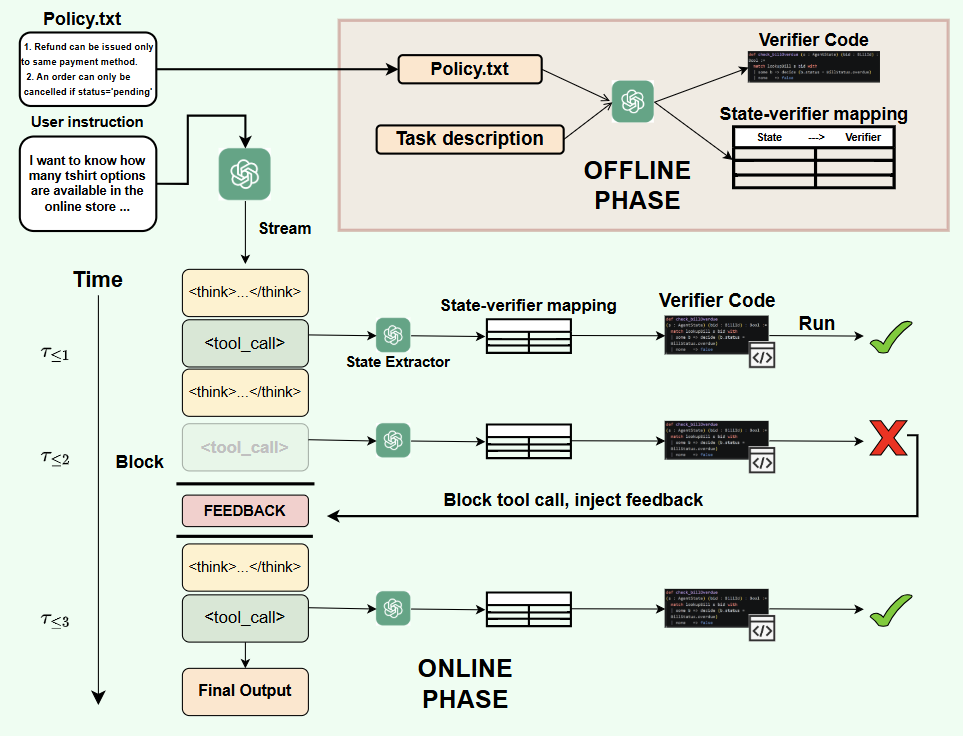

Synthesizes provably correct verifiers in Lean (and z3) from natural-language policies to check intermediate reasoning states.
Abstract
Reasoning models produce long traces of intermediate decisions and tool calls, making test-time verification important for ensuring correctness. Existing approaches either verify only the final answer, which misses early errors, or rely on branch-and-verify strategies that explore multiple trajectories. We introduce interwhen, a single-trajectory verification framework that steers model behavior by providing feedback on intermediate reasoning traces. It addresses two key challenges. First, given a set of verifiers, obtaining verifiable states from the reasoning trace typically requires prompt engineering or external task decomposition into fixed steps. Instead, we propose a monitoring system that periodically polls the reasoning trace and forks inference of the reasoning model to recover intermediate states. Verifiers are run asynchronously alongside generation, adding negligible overhead on correct executions and intervening only when violations occur. Second, beyond math and code, a central challenge for process verification is the scarcity of verifiers. interwhen addresses this through automatic verifier synthesis from natural-language policy documents. Given a policy, it can generate code-based verifiers, including provably correct verifiers in Lean and z3. Together, these contributions yield a plug-and-play test-time verification system that can improve task completion and policy compliance of any reasoning agent. On reasoning benchmarks where policies encode mathematical or logical constraints, interwhen achieves near-perfect accuracy for reasoning models using a fraction of the tokens of baselines. On agentic benchmarks with policy-based verifier generation, it enables improvements in task quality for SLMs without any finetuning, e.g., task completion rate of Qwen3-30B jumps from 32% to 87% on the telecom domain in tau2-bench. Code at https://github.com/microsoft/interwhen.
Problem
Reasoning models produce long traces of intermediate decisions and tool calls, but existing verification approaches either check only the final answer (missing early errors) or use branch-and-verify strategies that explore multiple trajectories, increasing cost.
Approach
interwhen is a single-trajectory verification framework that steers model behavior by providing feedback on intermediate reasoning traces. It has an offline phase (verifier code generation from a task policy) and an online phase that monitors the reasoning trace, extracts verifiable states at regular intervals via a forked execution, and provides corrective feedback. The framework uses Lean as one of its formal verifiers for mathematical reasoning tasks. It decouples verification from generation so that multiple verifiers can run without interrupting the model.

Figure 1 : LLM-Process Modulo has two phases: an offline phase consisting of verifier code generation based on a task policy, and an online phase that steers a single reasoning trajectory and ensures policy compliance. The interwhen system monitors the reasoning trace and decouples verification from generation: at regular intervals, verifiable states are extracted by a forked execution of the same
Results
The framework proves that its policy-compliant acceptance probability is at least as high as the baseline. On mathematical reasoning and planning tasks, interwhen improves correctness over unverified generation while maintaining a single-trajectory budget, avoiding the cost of multi-trajectory branch-and-verify methods.